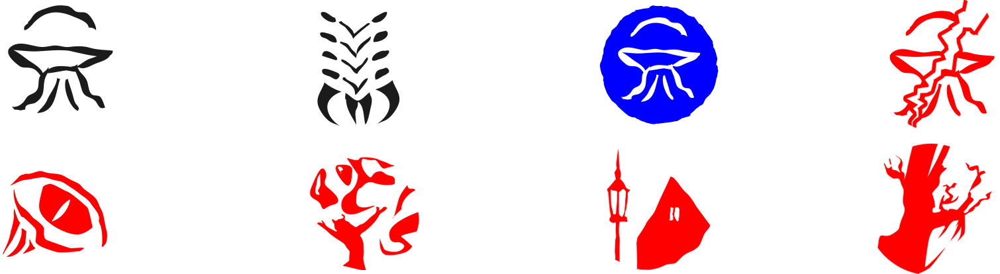

도입부 1: 창밖에서 들려오는 쏙독새 울음 소리에 잠에서 깬 당신은, 최악의 상황이 닥쳤을 것을 우려하며 장비를 쥐고는 던위치 거리로 나갑니다. 밖으로 나가자마자 피부로 파고드는 차가운 밤공기에서 악의 존재가 느껴집니다. 형용할 수 없을 정도로 끔찍하게 코를 찌르는 냄새와 당신을 무겁게 짓누르는 공기 탓에 숨이 턱턱 막혀옵니다. 주민들이 집 문을 꽉 걸어닫은 던위치 마을은 고요하고 황량합니다. 멀리 마을 너머의 언덕 꼭대기에서 희미한 빛이 보입니다. 저 언덕이 바로, 지블런이 말했던 그리고 아미티지 교수의 기록에도 적혀 있던 파수꾼 언덕입니다. 구전되는 바에 따르면 저곳에서 극악무도한 의식이 거행되어 왔다고 합니다. 그렇게 의식을 치를 때면 거대한 의식용 장작불이 밤하늘을 환히 밝히고 발아래 땅이 격렬하게 우르릉거렸다는 말도 있습니다.
쏙독새 떼가 당신을 둘러싼 마을 건물 지붕 위에 내려앉아서는, 당신이 지블런의 낡아빠진 트럭에 타는 모습을 불길하게 지켜봅니다. 파수꾼 언덕으로 차를 내달리자, 더욱 크고 기괴한 음정으로 울리는 쏙독새 소리에 귀가 아플 지경입니다. 그간 당신이 읽었던 내용과 던위치에서 겪은 일들 모두가 바로 이곳으로 당신을 인도하고 있습니다. 만약 세스 비숍이 벌이려는 사악한 의식이 몇 달 전 아미티지와 동료들이 막아내고자 했던 의식의 연장선상에 있다면... 세스는 분명 고대 괴물인 요그 소토스를 불러내려는 겁니다. 이 의식을 제때 막아내지 못한다면 던위치는... 아니 온 세계가 파멸을 맞이하게 될 것입니다.
- 캠페인 기록지를 확인합니다.
- 나오미가 조사자들의 뒤를 맡았다이며 캠페인 기록지의 “동행” 항목에 ‘나오미 오배니언’이 기록되어 있다면, 도입부 2로 이어집니다.
- 그 외의 경우, 조사자 준비로 건너뜁니다.
도입부 2: 파수꾼 언덕으로 향하는 길은 너무 좁고 엉망진창이어서 지블런의 낡은 트럭으로는 뚫고 갈 수가 없습니다. 당신은 언덕 아랫자락에 차를 세우고 꼭대기까지 등반할 준비를 했습니다. 바로 그때, 이곳에 온 게 당신만이 아니라는 걸 알게 되었습니다. 등 뒤의 숲에서 몇몇 남녀가 손에 총을 들고나와 당신을 바라봅니다. 그때 나오미가 앞으로 나서서 말합니다. “참 빨리도 왔네, 일이 수습되는 대로 합류하라고 했었지?” 나오미가 뒤돌아 당신을 보며 말합니다. “아, 백업 플랜이 필요할 것 같아서 불러 뒀어. 아주 끝장나는 시간에 찾아온 것 같긴 하지만.”
그러자 맨 앞에 있던 우락부락한 갱단원이 흙빛이 된 얼굴로 변명합니다. “나오미님께서 떠난 후로 아컴 전체가 난리도 아니었습니다. 미스캐토닉 대학이며 외곽 지대 숲이며, 모든 곳에서 괴생명체들이 달려들어 도시를 이잡듯이 뒤지기 시작했습니다. 외람된 말씀인 것은 알지만, 셸던 갱단 놈들이 강변 부두를 잃고 번화가로 밀려나면서 저희 영업장에 밀려들기도 해서 뒷정리도 필요했고요. 소요사태부터 정리한 후에 알아봤더니, 이 모든 것의 배후에 아컴에서 온 몇몇 이들이 있더군요. 비숍 어쩌고 하는 친구와 그의 똘마니들 말입니다. 곧바로 추적해서 오려고 했지만, 하필 에식스 카운티 노선이 끊겼기에 이 시궁창까지 도착하는데 시일이 더 걸렸습니다. 정말 죄송합...” 그가 말을 덧붙이기도 전에, 너무나도 친숙한 토미건 발포음이 언덕 맞은편에서 메아리칩니다. “저쪽은 비니가 맡은 곳인데...” 갱단원의 말에 나오미가 명령합니다. “그딴건 됐어, 다들 저쪽을 맡아!” 맨 앞에 선 갱단원이 다른 이들에게 따라오라는 신호를 주고 언덕 위로 달려 올라갑니다. 당신과 나오미는 고개를 저으면서 그의 뒤를 따릅니다. 이들이 제 아무리 아컴에서 괴생명체를 상대해 봤다고 하지만, 과연 여기서도 무력이 통할까요?
- 대표 조사자는 토큰 저장소에서 단서를 1개 가져와 획득합니다(3~4명이 게임을 한다면, 1개 대신 2개 획득합니다).
조사자 준비
- 조사자마다 각자 사용 가능한 동행 하나씩을 선택해도 됩니다(조사자 수보다 사용 가능한 동행 수가 적다면, 선택할 수 있는 데까지만 선택합니다). 각자 본인이 선택한 동행을 플레이 영역 중 자신의 플레이 영역에 둡니다. (이러한 동행 자산은 여러 조우 세트에 걸쳐서 포함되어 있습니다.)
시나리오 준비
- 다음 조우 세트의 모든 카드를 모읍니다. 파멸이 기다리는 곳, 야수 종복, 돌아온 파멸이 기다리는 곳, 파멸이 기다리는 곳(도전 모드), 뒤틀린 마술, 아포고몬의 종복, 던위치의 공포, 던위치의 흉조. 이 세트에는 다음 아이콘이 그려져 있습니다.

(파란색은 돌아온 던위치의 유산, 빨간색은 던위치의 유산 도전 모드에 속한 조우 세트입니다)
- 파멸이 기다리는 곳 조우 세트에 포함된 시나리오 참조 카드를 게임에서 제거합니다. 파멸이 기다리는 곳(도전 모드) 조우 세트에 포함된 시나리오 참조 카드를 사용합니다.
- 다음과 같이 장소를 플레이 영역에 둡니다.
- 파멸이 기다리는 곳(도전 모드) 세트에 포함된 ‘언덕 아랫자락(수많은 갈림길)’, ‘경사로(변화무쌍한 길)’, ‘파수꾼 언덕 정상(파멸이 기다리는 곳)’을 플레이 영역에 둡니다. 다른 ‘언덕 아랫자락’, ‘경사로’, ‘파수꾼 언덕 정상’ 사본은 모두 게임에서 제거합니다. 모든 조사자는 ‘언덕 아랫자락’에서 시작합니다.
- ‘갈림길’ 사본 5장 중 1(조사자)장(단, 1명이 게임을 한다면 2장)을 무작위로 선택하여 플레이 영역에 둡니다. 나머지 ‘갈림길’ 사본은 모두 게임에서 제거합니다.
- ‘달라진 길’ 사본 5장을 비플레이 상태로 치워 둡니다.
- ‘파멸이 기다리는 곳(도전 모드)’ 참조 카드를 ‘언덕 아랫자락’ 근처에 둡니다. 이 카드는 다음과 같은 규칙을 추가로 제공합니다:
- 모든 ‘갈림길’ 장소의 단서값을 ‘1’로 취급하고 글상자에 있는 ‘1(조사자)’를 ‘1’로 취급합니다. 기존에 단서값이 0인 ‘갈림길’ 장소의 단서값도 ‘1’로 취급한다는 점에 유의하세요. 또한, ‘갈림길’ 외의 장소(‘달라진 길’ 등)에는 해당하지 않으니 주의하세요.
- ‘세스 비숍’을 비플레이 상태로 치워 둡니다.
- ‘공간의 틈새’ 음모 사본 3장, ‘시간의 소용돌이’ 음모 사본 3장, 돌아온 파멸이 기다리는 곳 조우 세트에 포함된 ‘나오미 오베니언’ 자산을 게임에서 제거합니다.
- 난이도에 따라, 캠페인이 끝날 때까지 혼돈 주머니에 다음의 혼돈 토큰을 추가합니다.
- 쉬움: –3. 보통: –5. 어려움: –6. 전문가: –7.
- 이번 시나리오에서는 다음 상황에 따라서 어떤 주요목적 2 카드를 사용할지 정합니다. 사용하지 않는 주요목적 2 카드는 모두 게임에서 제거합니다.
- 캠페인 기록지를 확인합니다. 조사자들이 사일러스 비숍을 본모습으로 회복시켰다면, 주요목적 2 - ‘언덕을 오르다(v. I)’를 사용합니다.
- 위 내용에 해당하지 않는다면, 캠페인 기록지를 확인합니다. 조사자들이 네크로노미콘을 회수하지 못했다면, 또는 네크로노미콘을 도난당했다면, 주요목적 2 - ‘언덕을 오르다(v.II)’를 사용합니다.
- 위 내용 중 어느 것에도 해당하지 않는다면, 주요목적 2 - ‘언덕을 오르다(v.III)’를 사용합니다.
- 주요사건 1a에 파멸 토큰을 6개 추가합니다.
- 캠페인 기록지를 확인합니다. 험지로 탈출한 요그 소토스의 새끼 1마리마다 주요사건 1a에 파멸 토큰을 1개씩 추가합니다.
- 난이도를 확인합니다.
- 어려움/전문가 난이도로 게임을 즐긴다면, ‘아포고몬의 광휘’ 음모 사본 하나를 주요사건 1a에 부착합니다. 3명 이상이 게임을 한다면, ‘열쇠와 문의 마법사’ 적 사본 하나를 플레이 영역 중 ‘경사로’에 둡니다.
- 캠페인 기록지를 확인합니다. 조사자들이 사일러스 비숍의 비극적인 삶을 끝내 주었다면, 괴물의 사체가 뒤틀리고 자라나 파수꾼 언덕에 나타납니다. 공포의 흉물 조우 세트에서 ‘변화무쌍한 구체의 집괴’ 적 하나를 가져와 플레이 영역 안 ‘경사로’에 둡니다. 공포의 흉물 조우 세트에 있는 나머지 카드는 조우 덱과 합친 후 섞습니다. 이 세트에는 다음 아이콘이 그려져 있습니다.

- 남은 조우 카드를 함께 섞어, 조우 덱을 만듭니다.
- 이제 당신은 게임을 시작할 준비가 되었습니다.
시나리오가 끝날 때까지 읽지 마시오
아무 결말에도 도달하지 못했다면(모든 조사자가 후퇴하거나 쓰러졌다면): 결말 2로 이어집니다.
결말 1: 이 엉성하게 장정된 책은 웨이틀리 노인이 저술한 것으로, 그는 윌버 웨이틀리에게 비밀스러운 고대의 마술을 알려준 장본인입니다. 당신은 책을 훑다가 시간과 공간 밖에 있는 공간, 수많은 세계가 모인 지점이자 요그 소토스가 기거하는 곳에 대한 글귀를 찾았습니다. 현실의 끝에 존재하는 이 연결지점에 도달해야만, 이 세계를 찢어 놓은 균열을 다시 닫을 수 있습니다. 당신은 스스로 죽음을 향해 나아가는 심정으로, 일말의 용기를 끌어모아 차원문에 발을 내딛습니다.
- 캠페인 기록지에 조사자들이 차원문으로 들어갔다라고 기록합니다.
- 각 조사자는 승점 더미에 있는 카드의 승점값만큼 경험치를 얻습니다.
- 시나리오 VII: “시공간을 헤매다”로 이어집니다.
결말 2: 이 세계의 경계 너머에 존재하는 신비로운 힘을 갈구했던 던위치의 주술사가 마침내 제 목적을 달성했습니다. 윌버와 웨이틀리 노인이 달성하지 못한 바를 이룬 것입니다. 주술사는 피의 희생과 형언할 수 없는 실험을 통해 마침내 암흑의 힘에 닿았습니다. 그러나, 그들은 이렇게 공들여 얻은 힘을 제대로 사용해 보지도 못하게 되었으니 기구하기 짝이 없는 운명이라 하겠습니다. 윌버의 아버지인 요그 소토스로부터 지식을 얻어내겠다는 갈망은, 차원을 넘어선 영역으로부터 괴물을 불러내고 말았습니다. 열린 균열을 통해서 요그 소토스가 파수꾼 언덕 위로 나타나 하늘을 덮고 온 세계를 휘감습니다. 이제 요그 소토스가 이 땅에 당도했으니, 인간의 발자취가 남은 모든 곳이 그의 지배하에 놓일 것입니다.
- 캠페인 기록지에 요그 소토스가 세계 사이의 장막을 찢고 나와 모든 현실과 하나가 되었다라고 기록합니다.
- 모든 조사자는 미칩니다.
- 조사자가 캠페인에서 패배했습니다.